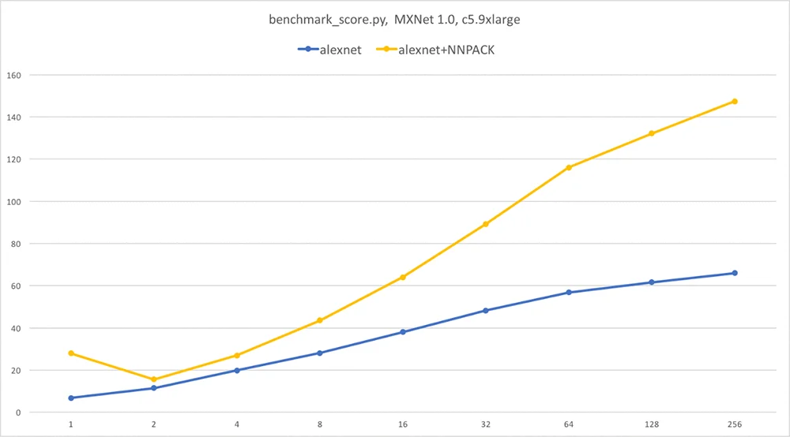
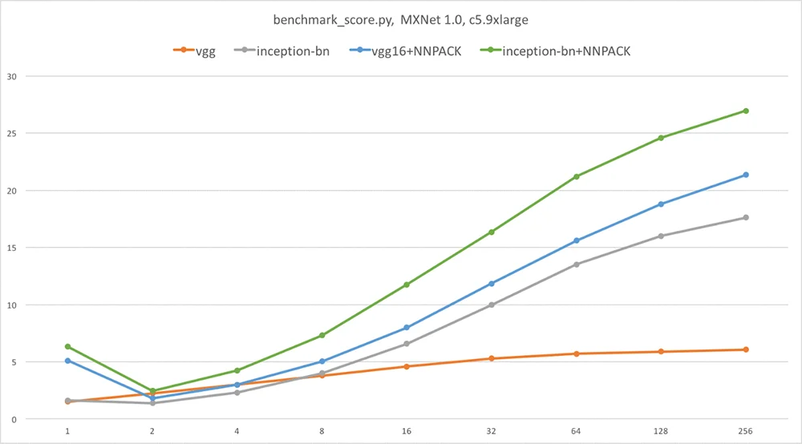

Published: 2018-01-22 | Originally published at AWS Blog
Published: 2018-01-22
Originally published at https://aws.amazon.com/blogs/machine-learning/speeding-up-apache-mxnet-using-the-nnpack-library/
Apache MXNet is an open source library developers can use to build, train, and re-use deep learning networks. In this blog post, I’ll show you to speed up inference by using the NNPACK library. Indeed, when GPU inference is not available, adding NNPACK to Apache MXNet might be a simple option to extract more performance from your instances. As always, “your mileage may vary,” and you should always run your own tests.
Before we start, let’s look at some training and inference fundamentals.
Training is the step where a neural network learns how to correctly predict the right label for each sample in the data set. One batch at a time (typically from 32 to 256 samples), the data set is fed into the network, which proceeds to minimize total error by adjusting weights thanks to the backpropagation algorithm.
Going through the full data set is called an epoch . Large networks might be trained for hundreds of epochs to reach the highest accuracy possible. This might take days or even weeks. By using GPUs, with their formidable parallel processing power, training times can be significantly cut down, compared to even the most powerful of CPUs.
Inference is the step where you actually use the trained network to predict new data samples. You could be predicting one sample at a time, for example trying to identify objects in a single picture as Amazon Rekognition does, or you could be predicting multiple samples at a time when processing requests coming from multiple users.
Of course, GPUs are equally efficient at inference. However, many systems are not able to accommodate a GPU because of cost, power consumption, or form-factor constraints. Thus, being able to run fast, CPU-based inference remains an important topic. This is where the NNPACK library comes into play because it will help us speed up CPU inference in Apache MXNet.
NNPACK is an Open Source library available on GitHub . How can it help? Well, you’ve surely read about Convolution Neural Networks . These networks are built from multiple layers applying convolution and pooling to detect features in the input image.
We won’t go into the actual theory in this post, but let’s just say that NNPACK implements these operations (and others, like matrix multiplication) in a highly-optimized fashion. If you’re curious about the underlying theory, please refer to the research papers mentioned by the author in this Reddit post .
NNPACK is available for Linux and MacOS X platforms. It’s optimized for the Intel x86-64 processor with the AVX2 instruction set, as well as the ARMv7 processor with the NEON instruction set and the ARM v8.
In this post, I use a c5.9xlarge instance running the Deep Learning AMI . Here’s what we’re going to do:
Let’s get to work.
NNPACK uses the Ninja build tool. Unfortunately, the Ubuntu repository does not host the latest version, so we need to build it from source as well.
Now let’s prepare the NNPACK build, following the instructions .
Before we actually build, we need to tweak the configuration file. The reason for this is that NNPACK only builds as a static library whereas MXNET builds as a dynamic library. This means that they won’t link properly. The MXNet documentation suggests using an older version of NNPACK, but there’s another way.
We need to edit the build.ninja file and the ‘-fPIC’ flag, in order to build C and C++ files as position-independent code, which is really all we need to link with the MXNet shared library.
Now, let’s build NNPACK and run some basic tests.
We’re done with NNPACK. You should see the library in ~/NNPACK/lib.
First, let’s install dependencies as well as the latest MXNet sources (1.0 at the time of writing). Detailed build instructions are available on the MXNet website .
Now, we need to configure the MXNet build. You should edit the make/config.mk file and set the variables that follow in order to include NNPACK in the build, as well as the dependencies we installed earlier. Just copy everything at the end of the file.
Now, we’re ready to build MXNet. Our instance has 36 vCPUs, so let’s put them to good use.
About four minutes later, the build is complete. Let’s install our new MXNet library and its Python bindings.
We can quickly check that we have the proper version by importing MXNet in Python.
We’re all set. Time to run some benchmarks.
Benchmarking with a couple of images isn’t going to give us a reliable view on whether NNPACK makes a difference. Fortunately, the MXNet sources include a benchmarking script which feeds randomly generated images in a variety of batch sizes through the following models: AlexNet, VGG16, Inception-BN, Inception v3, ResNet-50, and ResNet-152. Of course, the point here is not to perform predictions, only to measure inference time.
Before we begin, we need to fix a line of code in the script. Our instance doesn’t have a GPU installed (which is the whole point here) and the script is unable to properly detect that fact. Here’s the modification you need to make in ~/incubator-mxnet/example/image-classification/benchmark_score.py. While we’re at it, let’s add additional batch sizes.
Time to run some benchmarks. Let’s use eight threads for NNPACK, which is the largest recommended value.
As a reference, I also ran the same script on an identical instance running the vanilla MXNet 1.0. The graphs that follow plot the number of images per second vs. batch size. As you can guess, higher images per second is better.
As you can see, NNPACK delivers very significant speedups for AlexNet, VGG, and Inception-BN, especially for single picture inference (up to 4x faster).
Note : For reasons beyond the scope of this article, there is no speedup for Inception v3 and ResNet, so I didn’t provide graphs for these networks.


I hope you enjoyed this article, and I welcome your feedback. For more deep learning and Apache MXNet content, feel free to follow me on Medium and Twitter .
Julien is the Artificial Intelligence & Machine Learning Evangelist for EMEA . He focuses on helping developers and enterprises bring their ideas to life. In his spare time, he reads the works of JRR Tolkien again and again.
Julien Simon is a renowned AWS expert with extensive experience in machine learning, artificial intelligence, and cloud computing. During his tenure as Global Technical Evangelist for AI & ML at Amazon Web Services, he authored over 60 technical blog posts covering Amazon SageMaker, AWS AI services, and cloud innovations.
© 2025 Julien Simon - AWS Expert | julien.org